I am currently a research fellow in the Computer Science Department at National Univeristy of Singapore, where I work with Prof. Gim Hee Lee. Before that, I did my PhD in the Computer Science Department at National Univeristy of Singapore supervised by Prof.Gim Hee Lee, and Master in the Electronic Engneering Department at Beihang University, supervised by Prof. Xia Mao.
Email lichen [at] u [dot] nus [dot] edu Google ScholarMy research focuses on 3D Computer Vision and Deep Learning. Specifically, I have been working on human and animal pose understanding, implicit neural representation for 3D reconstruction and novel view synthesis. I am also interested in semi-superivsed learning, domain adaptation, few-shot and incremental learning for pose estimation and 3D representation.
| 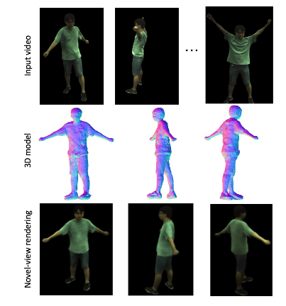 |
GHuNeRF: Generalizable Human NeRF from a Monocular Video
Chen Li, Jiahao Lin, Gim Hee Lee. International Conference on 3D Vision (3DV 2024) [Paper] [Code] |
| 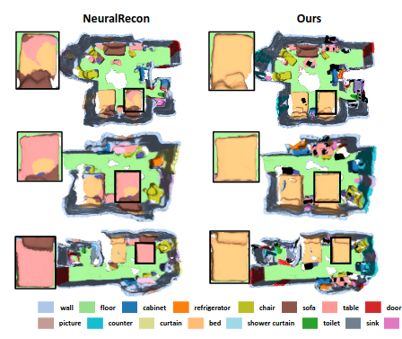 |
GNeSF: Generalizable Neural Semantic Fields
Hanlin Chen, Chen Li, Mengqi Guo, Zhiwen Yan, Gim Hee Lee. Conference on Neural Information Processing Systems (NeurIPS 2023) [Paper] [Code] |
| 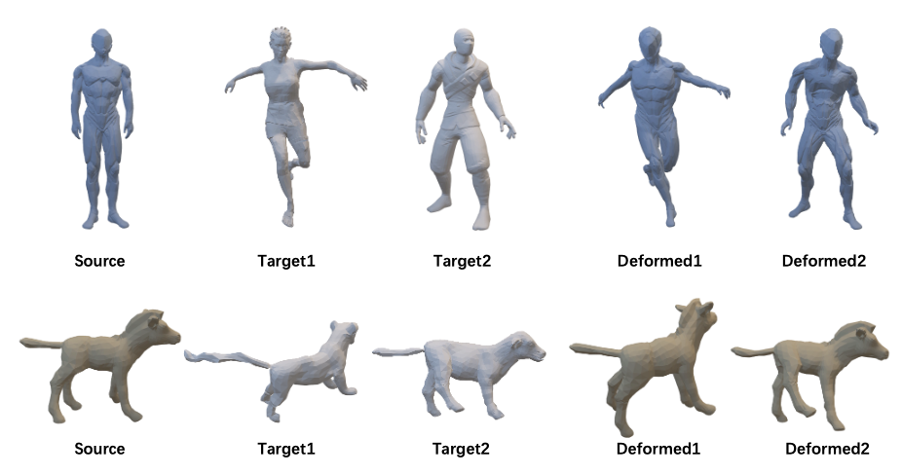 |
Weakly-supervised 3D Pose Transfer with Keypoints
Jinnan Chen, Chen Li, Gim Hee Lee. International Conference on Computer Vision (ICCV), 2023 [Paper] [Code] |
| 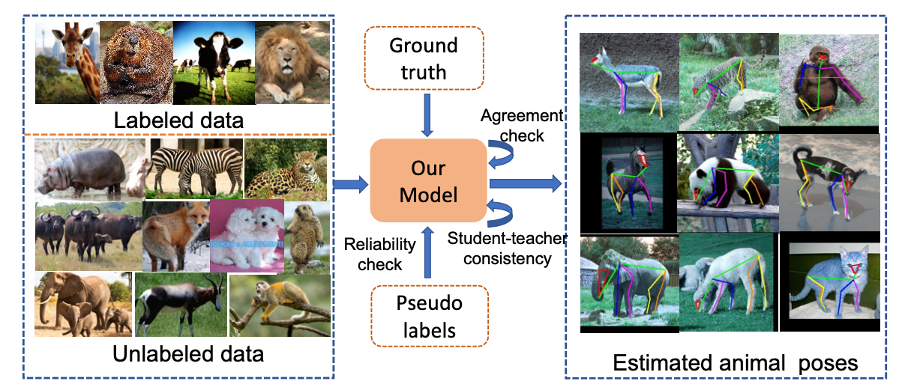 |
ScarceNet: Animal Pose Estimation with Scarce Annotations
Chen Li, Gim Hee Lee. Computer Vision and Pattern Recognition (CVPR), 2023 [Paper] [Code] |
| 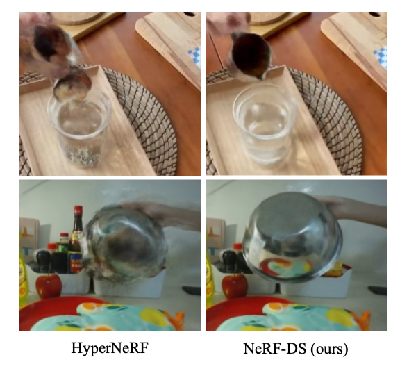 |
NeRF-DS: Neural Radiance Fields for Dynamic Specular Objects
Zhiwen Yan, Chen Li, Gim Hee Lee. Computer Vision and Pattern Recognition (CVPR), 2023 [Paper] [Code] [Project Page] |
| 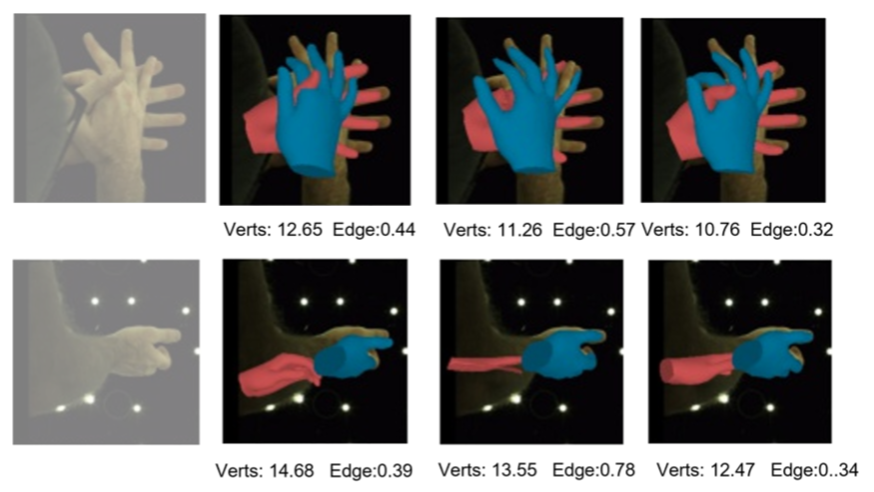 |
Overcoming the Tradeoff in Accuracy and Plausibility for 3D Hand Shape Reconstruction
Ziwei Yu, Chen Li, Linlin Yang, Xiaoxu Zheng, Micheal Bi Mi, Gim Hee Lee, Angela Yao. Computer Vision and Pattern Recognition (CVPR), 2023 [Paper] |
| 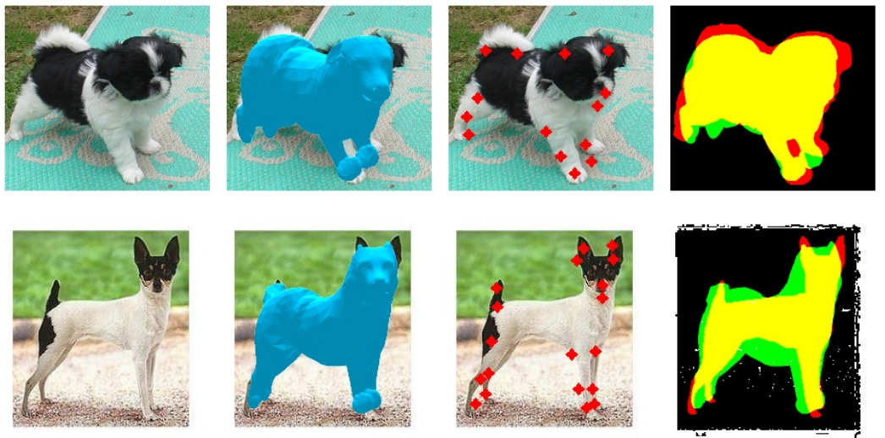 |
Coarse-to-fine Animal Pose and Shape Estimation
Chen Li, Gim Hee Lee. Neural Information Processing Systems (NeurIPS), 2021 [Paper] [Code] |
| 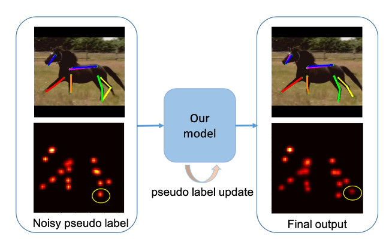 |
From Synthetic to Real: Unsupervised Domain Adaptation for Animal Pose Estimation
Chen Li, Gim Hee Lee. Computer Vision and Pattern Recognition (CVPR), 2021 (Oral) [Paper] [Code] [Video] [Project Page] |
| 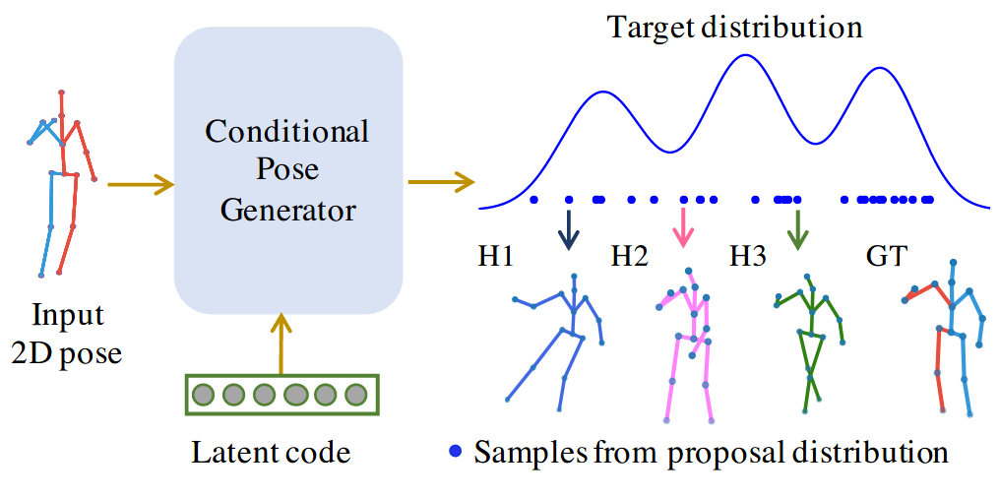 |
Weakly Supervised Generative Network for Multiple 3D Human Pose Hypotheses
Chen Li, Gim Hee Lee. The British Machine Vision Conference (BMVC), 2020 [Paper] [Code] |
| 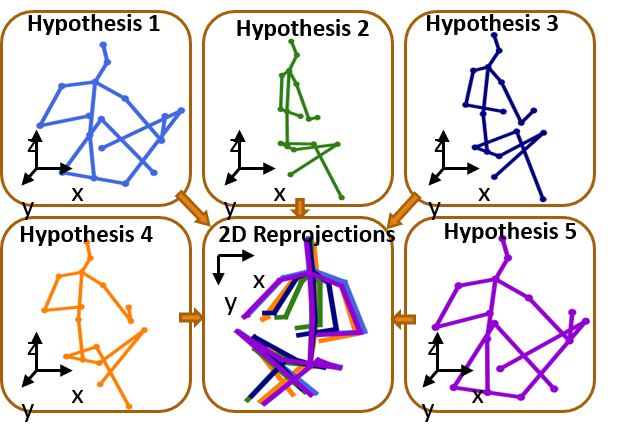 |
Generating Multiple Hypotheses for 3D Human Pose Estimation with Mixture Density Network
Chen Li, Gim Hee Lee. Computer Vision and Pattern Recognition (CVPR), 2019 [Paper] [Supplementary Material] [Code] |
| 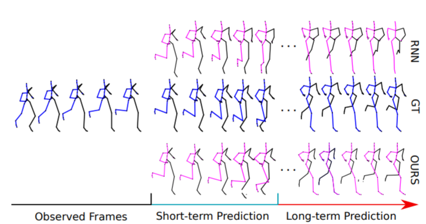 |
Convolutional Sequence to Sequence Model for Human Dynamics
Chen Li*, Zhen Zhang*, Wee Sun Lee, Gim Hee Lee. Computer Vision and Pattern Recognition (CVPR), 2018 [Paper] [Supplementary Material] [Code] |
Reviewer: CVPR, ICCV, ECCV, AAAI, 3DV, BMVC